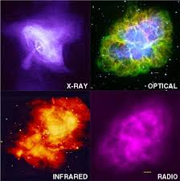

DIFFERENT TYPES OF ASTRONOMERS
Astronomers usually fall under either of two main types: observational and theoretical.
Observational astronomers make direct observations of celestial objects and analyze the data.
Observational astronomy is a division of astronomy that is concerned with recording data about the observable universe.
Father of Modern Observational Astronomy. Galileo Galilei, an Italian Renaissance man, used a telescope of his own to
collect evidence that supported a Sun-centered model of the Solar System.
Theoretical astronomers, or “theorists” attempt to explain observations with physical laws or make predictions that can be tested
observationally.Theoretical astronomy is the use of analytical and computational models based on principles from physics and chemistry to describe
and explain astronomical objects and astronomical phenomena.This startling idea first appeared in scientific form in 1931, in a paper by Georges Lemaître,
a Belgian cosmologist and Catholic priest.
These are some types of astronomy..

An astronomer is a scientist in the field of astronomy who focuses their studies on a specific question or field outside the scope of Earth.
They observe astronomical objects such as stars, planets, moons, comets and galaxies – in either observational (by analyzing the data) or theoretical astronomy.
Examples of topics or fields astronomers study include planetary science, solar astronomy, the origin or evolution of stars, or the formation of
galaxies.Related but distinct subjects are like physical cosmology, which studies the Universe as a whole.Historically, astronomy was more concerned with the
classification and description of phenomena in the sky.